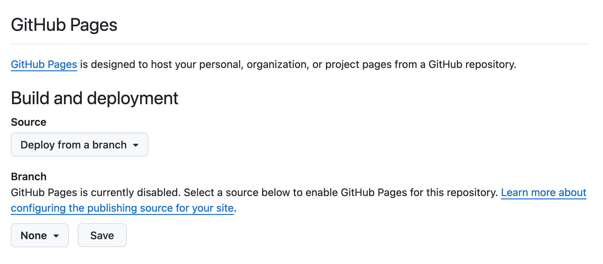

Information
Introduction
This tutorial covers material from Chapter 28 Quarto and Chapter 29 Quarto
formats in R for
Data Science (2e) by Hadley Wickham, Mine Çetinkaya-Rundel, and
Garrett Grolemund, although much of the information from Chapter 28 has
already appeared in the “RStudio and Github Introduction” tutorial in
this package. You will learn the process of creating and organizing the
Quarto websites using
the Quarto CLI
(command line interface) and commands like
quarto create project, quarto render,
quarto preview and quarto publish.
Creating files
Let’s make a Quarto website.
Exercise 1
Run quarto --version from the Terminal. CP/CR.
My answer:
Davids-MBP:r4ds.tutorials dkane$ quarto --version
bash: quarto: command not foundIf it works for you — i.e., if this command returns a Quarto version number — then don’t worry.
This failure is somewhat surprising since RStudio comes bundled with a version of Quarto, but that version is tucked away in a hard-to-use location, usually (on a Mac) something like:
/Applications/RStudio.app/Contents/Resources/app/quarto/bin/quartoYou can see the location on your machine by running
quarto::quarto_path() at the R Console. Instead of
installing a second version of Quarto — and having to deal with all the
weird problems which can arise from that — we might just add this
location to our PATH. But that can be tricky, so we just install another
version of Quarto which will appear on the PATH by default.
Exercise 2
If quarto --version failed in the previous Exercise,
install Quarto CLI on
your computer. Then, run quarto --version again from the
Terminal. CP/CR. (You may need to restart RStudio after installing
Quarto.)
My answer:
Davids-MBP:r4ds.tutorials dkane$ quarto --version
1.4.554
Davids-MBP:r4ds.tutorials dkane$ As long as the version is at least 1.4, you are OK. Again, having Quarto installed in two separate locations is a bit hacky, especially if they are different versions. But this seems a better approach then messing with your PATH.
Exercise 3
Create a public Github repo (called “first-website”). Make sure to click the “Add a README file” check box. Copy/paste the URL for its Github location.
Your answer should look something like:
https://github.com/davidkane9/first-websiteAlways start a new data science project with a new Github repo.
Exercise 4
Connect the first-website Github repo to an R project on
your computer. Name the R project first-website also.
Keeping the names of repos/projects aligned makes organization
simpler.
You will need to “Terminate Jobs” this tutorial. And you will be placed into the new project after RStudio restarts, as usual. Just restart the tutorial after this happens.
From the Terminal, run ls. CP/CR.
Your answer should look something like this:
Davids-MBP:first-website dkane$ ls
README.md first-website.Rproj
Davids-MBP:first-website dkane$ The default README has an “md” suffix to indicate that it is a Markdown document.
Exercise 5
In the Terminal, run quarto create project website ..
Don’t forget the . at the end of the command. This
indicates that the new files should be placed in the current working
directory.
Depending on your computer setup, this command will generate require you to answer some questions. Do so as best you can.
If you are asked for a “Title,” use A New Website.
If given a choice, choose “rstudio” rather than “vscode.”
This command will usually result in a restart of your RStudio
instance. Or it might create a second R instance, also located in the
first-website directory. If so, close one of the instances.
It does not matter which.
CP/CR.
Your answer should look like this:
Davids-MacBook-Pro-2:first-website dkane$ quarto create project website .
? Title (website) › A New Website
Creating project at /Users/dkane/Desktop/projects/first-website:
- Created _quarto.yml
- Created .gitignore
- Created index.qmd
- Created about.qmd
- Created styles.css
Davids-MacBook-Pro-2:first-website dkane$ Quarto is telling you what it did: creating 5 new files and placing
them in the current directory. Recall that, on the command
line, a . refers to the current directory.
Exercise 6
In the Console, run list.files(). CP/CR.
Your answer should look like:
> list.files()
[1] "_quarto.yml" "about.qmd" "first-website.Rproj" "index.qmd"
[5] "README.md" "styles.css" The basic set of files necessary for making a Quarto website has been
added to the current directory. Note how we can work with the current
directory either from the Terminal, with commands like ls,
or from the Console, with commands like list.files(). It is
important for you to be comfortable with both approaches, so we intermix
them in this tutorial.
Exercise 7
In the Console, run list.files(all.files = TRUE).
CP/CR.
Your answer should look something like:
> list.files(all.files = TRUE)
[1] "_quarto.yml" "." ".." ".git"
[5] ".gitignore" ".Rhistory" ".Rproj.user" "about.qmd"
[9] "first-website.Rproj" "index.qmd" "README.md" "styles.css"
> You would get the same set of files if, in the Terminal, you ran
ls -a. The -a ensures that
all the files are listed, included the “hidden” ones
which begin with a dot. Recall that .. means the directory
one level above the current one.
In general, we do not touch/manipulate “dot” directories, meaning
directories whose names begin with a period. Such directories are meant
to be used by the operating system and other programs. For example, the
program Git uses the .git directory to store information
about changes in all the files in the project.
Examining files
Now that we have created the necessary files, it is useful to examine them one-by-one. The goal is to provide you with a good introductory lesson about how websites are put together.
Exercise 1
In the Console, run:
show_file("_quarto.yml")CP/CR.
Did you get an error when you ran this? Something about ‘could not
find function “show_file”’? This is because you need to
library(tutorial.helpers) to have direct acccess to
show_file(), which is a function in the
tutorial.helpers package. Of course, you could use the
double colon notation —
tutorial.helpers::show_file("_quarto.yml") — as we did in
previous tutorials. But, at this stage in your R education, we want you
to become more comfortable with packages, and knowing yourself when they
need to be loaded.
YAML files are how Quarto
projects tell the world what they are. You can tell that
_quarto.yml is a YAML file by both its yml
file name suffix and by its content. The initial lines specify that this
is a website.
project:
type: websiteBut other values for type are possible.
Exercise 2
In the Console, run:
show_file("_quarto.yml", start = 4, end = 10)CP/CR.
These lines provide meta-information about the website and its organization.
website:
title: "A New Website"
navbar:
left:
- href: index.qmd
text: Home
- about.qmdIndents and other whitespace matter in the interpretation of a YAML file.
Exercise 3
In the Source pane, open the _quarto.yml file. If the
title field is not correct, often because it just contains
a ., replace title: "." with
title: "A New Website". Save the file.
In the Console, run:
show_file("_quarto.yml", start = 4, end = 10)CP/CR.
The indentation before title should match that
fornavbar below it.
Exercise 4
In the Console, run:
show_file("_quarto.yml", start = 12, end = 16)CP/CR.
These lines provide formatting information about the pages of the website.
format:
html:
theme: cosmo
css: styles.css
toc: trueThe css line tells Quarto to use the
styles.css file, located in the same directory, for the
“style” of the pages.
Exercise 5
In the Console, run:
show_file("index.qmd")CP/CR.
The answer should look like:
> show_file("index.qmd")
---
title: "A New Website"
---
This is a Quarto website.
To learn more about Quarto websites visit <https://quarto.org/docs/websites>.
> Whenever a web browser goes to a directory on the internet, it looks
for an index.html file. If found, that file is displayed.
So, the index.qmd file, which we will soon render as
index.html, is important.
Note that the title ("A New Website") in
_quarto.yml has no necessary connection to the
title ("A New Website") in
index.qmd. The former is the title for the entire website.
The latter is the title for just the (yet-to-be-created)
index.html page. They are set to the same values by default
when we use quarto create project website . and answer the
question about the title.
If you do not answer the question or if you are using an old version
of Quarto which does not ask the question, then the title will be
. in both locations.
Exercise 6
In the Console, run:
show_file(".gitignore")CP/CR.
Your answer should look like this:
> show_file(".gitignore")
.Rproj.user
.Rhistory
.RData
.Ruserdata
/.quarto/
> Note that .gitignore contains a new line:
/.quarto/. This was added when we ran
quarto create project. The leading / escapes
the .. In other words, we need the leading /
if we want to ignore the files in a dotted directory.
In fact, the .quarto directory does not yet exist. But
the quarto create project command wanted to ensure that,
once it does, Git would ignore it and its contents.
Exercise 7
We don’t want to put all the files on Github. So, let’s make two
changes to the .gitignore file:
- Add
*Rprojto exclude thefirst-website.Rprojfile. - Add an empty last line.
Save the file.
In the Console, run:
show_file(".gitignore")CP/CR.
Good data scientists believe in transparency and reproducibility. We want people — include “future” us — to be able to reproduce our work. By default, almost every file belongs on Github. But settings for R projects are both not necessary for replication and often specific to each individual.
Exercise 8
Commit and push all the files in the project. Run
git log in the Terminal. CP/CR.
The output from the git log command is too complex for
us to fully parse. If you want to learn more about how to work with
Git/Github and R, check out Happy Git
with R, a very useful resource.
Rendering and previewing
We now have the infrastructure for our website. We want to create (or “render”) the webpages themselves and then “preview” them to see what they will look like when we place them on the web.
Exercise 1
From the Terminal, run quarto render. CP/CR.
Your answer should look something like:
Davids-MBP:first-website dkane$ quarto render
[1/2] index.qmd
[2/2] about.qmd
Output created: _site/index.html
Davids-MBP:first-website dkane$ Quarto reports to us what it has done, working on our two QMD files
and creating a new directory, _site, in which it has placed
an index.html file.
If you look at the _site directory in the Files tab, you
will see lots of new files, including about.hmtl. Quarto
just tells you about the home page for the site, which is
index.html by default, since that is the file that browsers
like Google Chrome always look for.
Exercise 2
From the Console, run list.files("_site"). CP/CR.
Your answer will probably look something like:
> list.files("_site")
[1] "about.html" "index.html" "search.json" "site_libs" "styles.css"
>The about.html and index.html files are
simply the rendered about.qmd and index.qmd
input files. They are placed into the _site directory
because the convention, when constructing websites and other large
projects, is to separate out the outputs from the inputs.
The webpages which make up a website are often placed in a directory
named either _site or docs, depending on the
setup of your web hosting service.
We won’t discuss the search.json and
styles.css files. The site_libs directory
includes many files beyond the scope of this tutorial. The basic idea is
that the entire _site directory is a functioning website,
ready to be deployed.
Exercise 3
Add /_site to the .gitignore. Don’t forget
that the last line of a .gitignore should always be blank.
Save the file.
In the Console, run:
show_file(".gitignore")CP/CR.
This command is convenient
because the _site directory contains of lot of weird files
that change often enough to annoy. We don’t create any of them directly,
so we don’t really need to back them up. Moreover, they will still get
published directly to the web from our computer.
The initial backslash in /_site allows Git to interpret
_site correctly. The / escapes the
_, allowing it to be treated as a literal, rather than
special, character. See the “Regular expressions” tutorial in this
package for more information. _site is a directory, so we
could end the expression with a backslash, but Git, like most programs
interpret _site and _site/ to refer to the
same thing, which they do.
Exercise 4
From the Terminal, run quarto preview. CP/CR.
Your answer should look something like this:
Davids-MBP:first-website dkane$ quarto preview
Preparing to preview
[1/1] index.qmd
Watching files for changes
Browse at http://localhost:7412/
GET: /The quarto preview command does two things. First, it
renders the QMD files, just like quarto render does.
Second, it sets up a viewer — probably your default web browser but
possibly the “Viewer” tab in the Output pane — so that you can see what
the website looks like. Click around and check it out!
The message at the end indicates that Quarto is now “watching” your files to see if you make any changes. If you do, it will automatically update the website.
Exercise 5
Look at your website in the browser. (You might need to enter the URL
by hand. It is http://localhost:7412/ in my case, but yours
will be different.) Click on the “About” link.
Now, go to the Terminal. Copy-and-paste everything from the previous
invocation of quarto preview.
Your answer should look like this:
Davids-MBP:first-website dkane$ quarto preview
Preparing to preview
Watching files for changes
Browse at http://localhost:7193/
GET: /
GET: /about.htmlQuarto is hanging out, still running in the background, monitoring
your website. So, when you clicked the “About” link, it went to “GET”
the about.html page to show to you.
Exercise 6
Look again at your website in the browser. Click on the “Home” link and then copy/paste the entire screen.
Your answer should look something like:
A New Website
Home
About
A New Website
This is a Quarto website.
To learn more about Quarto websites visit https://quarto.org/docs/websites.The title of the entire project (“A New Website”), taken from the
_quarto.yml file, appears in the upper left hand corner.
The title of the main home page (“A New Website”), taken from the
index.qmd file, appears at the top of the Home page, which,
by default, is always the index.html file.
(Depending on your browser and other settings, the copy/paste might also capture the “Home” and “About” links. No worry either way.)
Exercise 7
Copy/paste the URL for your previewed website.
Your answer should be something like:
http://localhost:7193/The website is being “hosted” on your computer. That is what the word “localhost” refers to. It is not available on the web.
Exercise 8
The advantage of using quarto preview is that the
website is automatically updated whenever you edit and save the
underlying QMD file. Try it by changing the about.qmd file,
replacing “About this site” with your name. Save the file.
At the Terminal, you should see a new message. Copy and paste it here.
Your answer should look something like this:
pandoc
to: html
output-file: about.html
standalone: true
title-prefix: A New Website
section-divs: true
html-math-method: mathjax
wrap: none
default-image-extension: png
css:
- styles.css
toc: true
metadata
document-css: false
link-citations: true
date-format: long
lang: en
theme: cosmo
title: About
GET: /about.html
Quarto has noticed that you changed/saved the about.qmd
file. It rendered the new version, creating a new
about.html which it has now gotten and is
displaying.
Exercise 9
Copy/paste the About page from the Viewer pane or your browser. (We will just say “browser” going forward, but we mean wherever your website appears.)
Your answer should look like this, except with your name instead of mine!
A New Website
Home
About
About
David KaneIf you want to stop quarto preview you can cancel the
command by hitting the red stop sign which is located in the upper right
of the Terminal tab. (If the red stop sign is not visible, you can also
stop quarto preview by typing Ctrl + c.)
Publishing
To make your website publicly visible, you need to “publish” it to the web. The Quarto documentation provides a thorough discussion. We will be using GitHub Pages.
Exercise 1
Go to your first-website Github repository.
Click on the “Settings” option on the right side of the top menu.
Click on the “Pages” option on the lefthand side menu.
Copy/paste the resulting URL.
Your answer should look like:
https://github.com/davidkane9/first-website/settings/pagesThis page shows the settings which control the behavior of Github pages. It should look something like this:

Sam Csik provides an excellent overview of the entire process of creating Quarto websites.
Exercise 2
To use Github pages, we need to complete some set up work. The usethis package is designed to make this sort of work easier.
In the Console, run library(usethis). CP/CR.
There are other free services you can use for hosting your websites, including Quarto Pub and Posit Cloud.
Exercise 3
At the Console, run use_github_pages(). CP/CR.
You answer should look like:
> use_github_pages()
✔ Setting active project to '/Users/dkane/Desktop/projects/first-website'
✔ Initializing empty, orphan 'gh-pages' branch in GitHub repo 'davidkane9/first-website'
✔ GitHub Pages is publishing from:
• URL: 'https://davidkane9.github.io/first-website/'
• Branch: 'gh-pages'
• Path: '/'
> use_github_pages() has completed the set up for using
Github pages. If you refresh the “Pages” page for your repo, it should
look more like this:
Understanding the details of what these changes mean is beyond the scope of this tutorial.
Exercise 4
As the “Pages” page indicates, you now have a website. Copy/paste its URL.
The URL should be something like this:
https://davidkane9.github.io/first-website/But, if you go to the URL, you will get an error message because you have not uploaded any of the necessary files.
Exercise 5
Ensure that all the files in the project have been committed and
pushed. (Recall that you have, at least, edited about.qmd
and that doing so has caused changes in other downstream files.)
At the Terminal, run:
quarto publish gh-pages
You will then need to select “Yes” to accept the default settings.
CP/CR the first few lines of the output.
Your answer should look like this:
Davids-MacBook-Pro-2:first-website dkane$ quarto publish gh-pages
? Update site at https://davidkane9.github.io/first-website/? (Y/n) › Yes
From https://github.com/davidkane9/first-website
* branch gh-pages -> FETCH_HEAD
* [new branch] gh-pages -> origin/gh-pages
Rendering for publish:
[1/2] index.qmd
[2/2] about.qmd
Preparing worktree (new branch 'gh-pages')
branch 'gh-pages' set up to track 'origin/gh-pages'.
HEAD is now at 897554b Remove temp file
fatal: pathspec '.' did not match any files
[gh-pages 55c1b2a] Built site for gh-pages
23 files changed, 6027 insertions(+)
...
origin https://github.com/davidkane9/first-website (push)
To https://github.com/davidkane9/first-website
897554b..55c1b2a HEAD -> gh-pages
NOTE: GitHub Pages sites use caching so you might need to click the refresh
button within your web browser to see changes after deployment.
[✓] Deploying gh-pages branch to website (this may take a few minutes)
[✓] Published to https://davidkane9.github.io/first-website/
Davids-MacBook-Pro-2:first-website dkane$ quarto publish, like quarto preview, first
renders all the files on the project. Note the phrase “Rendering for
publish” in the output. The URL for the website is provided at the
end.
Exercise 6
A link to your new website should be brought up in a browser. Copy/paste the URL for your website. (It is the same URL which produced an error when we used it earlier.)
It should look like:
https://davidkane9.github.io/first-website/When using GitHub Pages, the URL will always have the same base: your
GitHub user name followed by github.io. The second part of
the URL will be the name of the repo. So, use non-stupid names for your
repos.
Exercise 7
If you look closely in the Files tab, you will see a new directory,
.quarto, in the Files tab. Neither this directory, nor any
of the files within it, appear in the Git tab because of the
/.quarto/ line in the .gitignore file.
From the Console, run list.files(".quarto"). CP/CR.
The .quarto directory is like the .git and
.Rproj.user directories. We will never look at or change
the files inside of them. Only the relevant programs — Quarto, Git and
RStudio — should work with the contents of these directories.
Exercise 8
Open the _quarto.yml file in the Source pane. Change
title: "A New Website" to
title: "A New Website, second edition". Save the file.
In the Console, run:
show_file("_quarto.yml", start = 4, end = 5)CP/CR.
Your answer should look like:
> show_file("_quarto.yml", start = 4, end = 5)
website:
title: "A New Website, second edition"
>Keep track of the three different places that the title of our
project now exists. First, it is present in _quarto.yml. We
have changed it there. But we have not changed it in the
_site files which constitute the website nor in files
uploaded to Github Pages.
Exercise 9
From the Terminal, run quarto preview. Copy and paste
the text from the home page once it comes up on your browser.
Your answer should look like:
A New Website, second edition
Home
About
A New Website
This is a Quarto website.
To learn more about Quarto websites visit https://quarto.org/docs/websites.But, if you look at the Github Pages version of your website, it
still uses the “A New Website” title because we have not (yet) published
our new version. We have, however, changed the files in the
_site directory.
Exercise 10
Stop the quarto preview command by hitting the red stop
sign on the upper right of the Terminal tab. From the Terminal, run
quarto publish. You may need to hit
return/enter to confirm that you still want to use GitHub
Pages.
CP/CR.
Your answer should look like:
Davids-MacBook-Pro-2:first-website dkane$ quarto publish
? Publish update to: › https://davidkane9.github.io/first-website/ (GitHub Pages)
From https://github.com/davidkane9/first-website
* branch gh-pages -> FETCH_HEAD
Rendering for publish:
[1/2] index.qmd
[2/2] about.qmd
Preparing worktree (resetting branch 'gh-pages'; was at 2576ffd)
branch 'gh-pages' set up to track 'origin/gh-pages'.
HEAD is now at 2576ffd Built site for gh-pages
[gh-pages f262006] Built site for gh-pages
3 files changed, 5 insertions(+), 5 deletions(-)
origin https://github.com/davidkane9/first-website (fetch)
origin https://github.com/davidkane9/first-website (push)
To https://github.com/davidkane9/first-website
2576ffd..f262006 HEAD -> gh-pages
NOTE: GitHub Pages sites use caching so you might need to click the refresh
button within your web browser to see changes after deployment.
[✓] Deploying gh-pages branch to website (this may take a few minutes)
[✓] Published to https://davidkane9.github.io/first-website/
Davids-MacBook-Pro-2:first-website dkane$ Exercise 11
Commit and push all the files in the project. Run
git log -n 2 in the Terminal. CP/CR.
The -n 2 option causes Git to just provide the
information on the last two commits.
Note both the simplicity and the complexity of your project. It is simple in that, even if our computer blew up we would be able to recreate everything from the files on Github. It is complex in that there are a lot of files, interacting in a fairly sophisticated fashion.
Summary
This tutorial covered material from Chapter 28 Quarto and Chapter 29 Quarto
formats in R for
Data Science (2e) by Hadley Wickham, Mine Çetinkaya-Rundel, and
Garrett Grolemund, although much of the information from Chapter 28 has
already appeared in the “RStudio and Github” tutorial in this package.
You have learned the process of creating and organizing the Quarto websites using the
Quarto CLI (command
line interface) and commands like quarto create project,
quarto render, quarto preview and
quarto publish.
Sam Csik provides an excellent overview of the entire process of creating Quarto websites.
Download answers
- Click the button to download a file containing your answers.
- Save the file onto your computer in a convenient location.
(If no file seems to download, try clicking with the alternative button on the download button and choose "Save link as...")